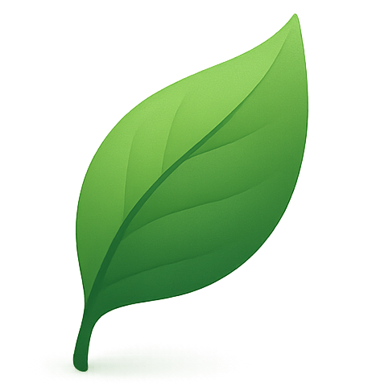
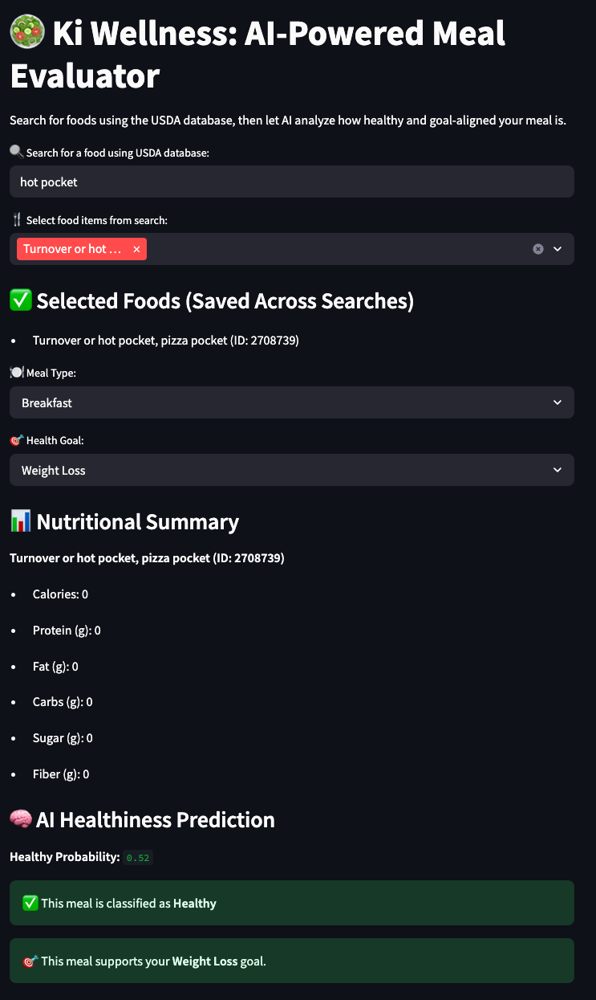
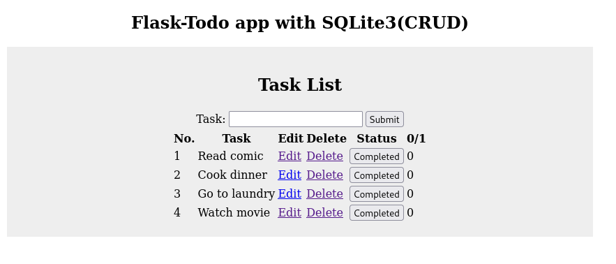

Designing and developing innovative software solutions including AI-driven apps, automation tools, and embedded systems.

Ki Wellness App
AI-powered holistic health coach app combining nutrition tracking, fitness planning, and spiritual wellness insights.
React
Next.js
FastAPI
Supabase
OpenAI API

RC Autonomous Car
Designed and developed autonomous self driving rc vehicle with object detection, pathfinding, and obstacle avoidance using C++."
C++
Arduino IDE
AutoCAD
Ultrasonic Sensors
Github

AI Food Journal
A full-stack, AI-powered nutrition tracking platform with real-time macro analysis, intelligent recommendations, and data-rich visualizations.
Python
Flask
SQLite
TailwindCSS
OpenAI
HTML5
CSS3

Meal Classifier
A simple Streamlit-based computer vision app that classifies a meal image as healthy or unhealthy using a trained CNN model.
Python
TensorFlow/Keras
Streamlit
OpenCV

Flask To-Do App
A lightweight task management application built with Flask, allowing users to create, edit, and track to-do items in a simple, clean interface.
Python
Flask
SQLite
Bootstrap